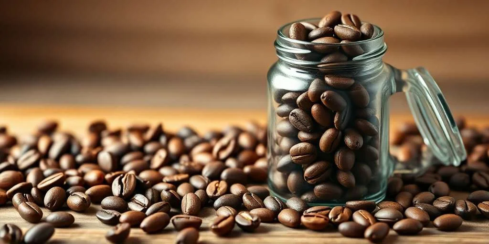
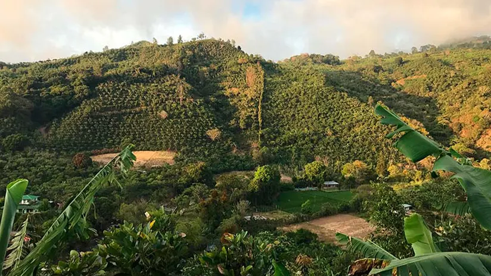

Café de especialidad 100% Orgánico del Perú
Seleccionamos granos orgánicos arábicos de pequeños caficultores de Villa Rica,Quiyabamba y Chanchamayo. Tostado semananlmente en pequeños lotes para garantizar una experiencia aromática inigualable.

Nuestra Pasión por el café de altura
Café Origen Perú creemos en el comercio justoy en la sostenibilidad agrícola.Trabajamos directamente con familias productorasa más de 1,600metros sobre el nivel del mar,eliminando intermediarios y pagando precios éticos por cosechas de estricta altura.

Pilares de nuestra Tostaduria
Cultivo Bajo Sombra
Las plantas crecen protegidas por arboles nativos, preservando la biodervidad y fauna local.
Cosecha Selectiva a Mano
Unicamente se recolectan las cerezaa de café en su punto óptimo de maduración roja.
Tueste Medio Artesanal
Perfilamos cada origen para resaltar sus notas frutales y achocolatadas sin quemar los aceites naturales.